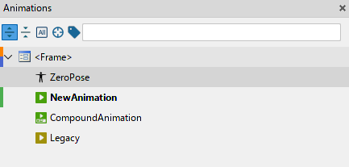
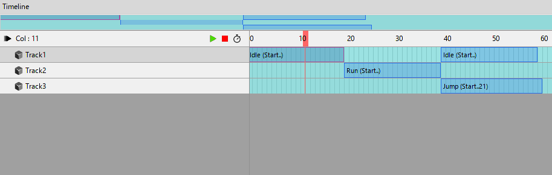
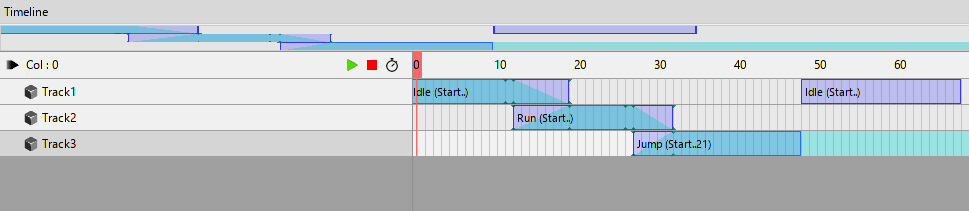

Parallel Animations

Default Animation
Animations are containers for animators, their keyframes and markers.
When you run animation it starts interpolating properties of widgets between values locked with keyframes. You can run multiple animations at the same time.
Note
If multiple animations animate the same property of one widget the end result is undefined. Use compound animations for that purpose.
ZeroPose Animation
Sometimes during animation process you can find that all your animations have the same initial frame / state. In Citrus we call it "zero-pose".
The main purpose of such animation is to automate a creation and update process for the "zero-pose" keyframe on all your animations.
You can have only one ZeroPose Animation per node.
Once you add the ZeroPose animation it will generate keyframes on the first frame (frame 0) for all animators you change. Also it will propagate all the changes for these animators when you update ZeroPose animation.
Note
Changing the keyframe generated by ZeroPose from another animation disables propagation for its animator. Please keep it in mind.
Compound Animation

Compound Animation is a powerful tool which allows you to combine multiple "Default" animations into one. It turns Timeline into special mode where you can place your animations on tracks, split them on clips and set different playback options for each clip.

Also you can set the blending between two different animations using «Shift» hotkey and by clicking on a left or right edge of the animation on track.